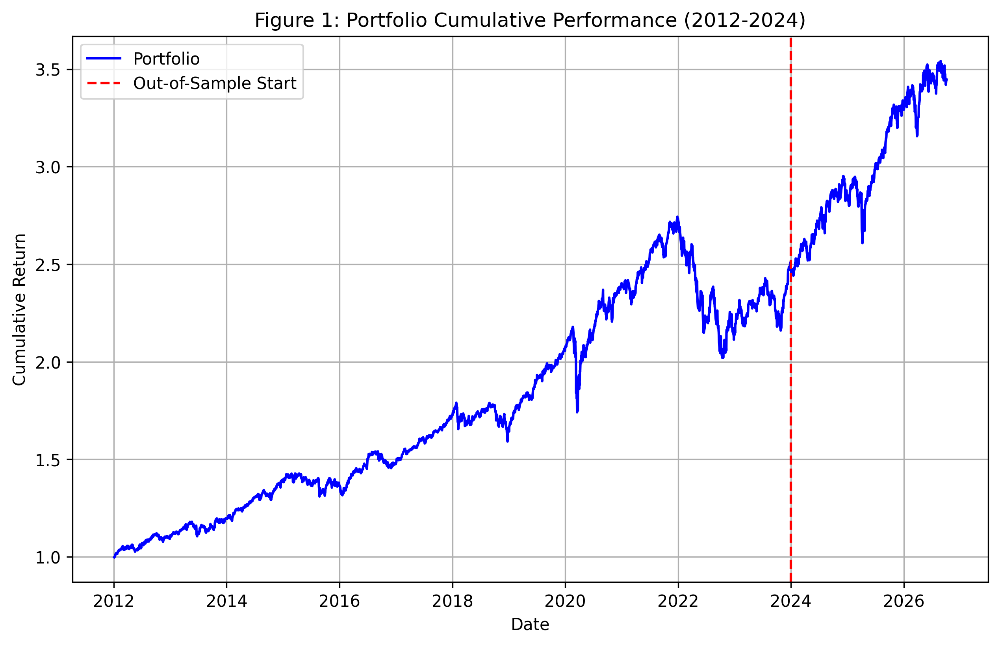
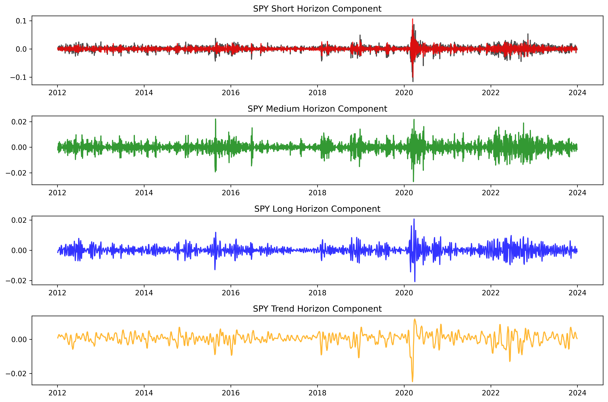
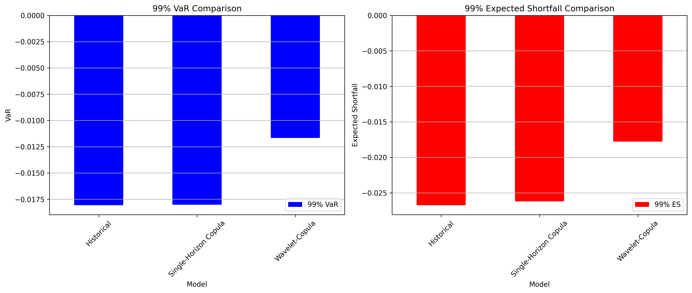
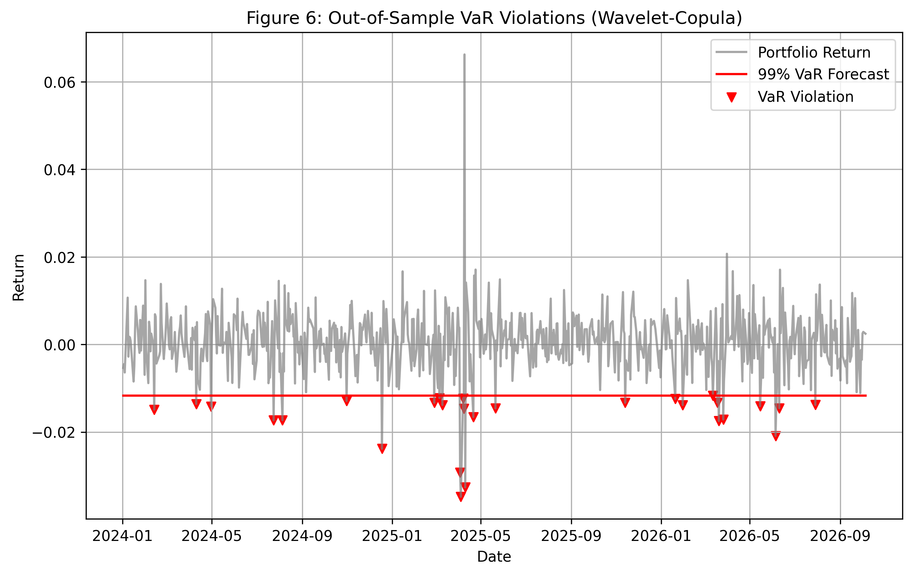
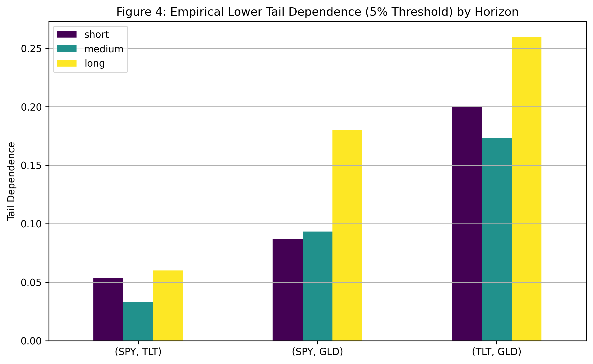

Wavelet-Copula Portfolio Risk Analysis
Key Insight: The Wavelet-Copula model yields a significantly less conservative VaR estimate compared to the naive Historical benchmark, and it experiences an unacceptable number of out-of-sample violations.
Reasoning: By simulating wavelet horizons independently, the model assumes extreme shocks at different frequencies are uncorrelated. In reality, market crashes exhibit simultaneous extremes across all horizons (volatility clustering). Independent simulation mathematically destroys this cross-horizon dependence, underestimating risk.
Actionable Advice: Risk managers must not treat different investment horizons as independent signals when simulating portfolio risk. A robust model must explicitly model the dependency across horizons (e.g., using a meta-copula).


| Model | 99% VaR | 99% ES |
|---|---|---|
| Historical | -0.018060 | -0.026727 |
| Single-Horizon Copula | -0.018016 | -0.026209 |
| Wavelet-Copula | -0.011672 | -0.017788 |

| Model | Violations | Expected Violations | POF p-value | ES Score (Actual - Forecast) |
|---|---|---|---|---|
| Historical Benchmark | 5 | 6.92 | 4.402628e-01 | -0.001552 |
| Wavelet-Copula | 28 | 6.92 | 1.328136e-09 | 0.000974 |

| Unnamed: 0 | Unnamed: 1 | short | medium | long |
|---|---|---|---|---|
| SPY | TLT | 0.053333 | 0.033333 | 0.06 |
| SPY | GLD | 0.086667 | 0.093333 | 0.18 |
| TLT | GLD | 0.200000 | 0.173333 | 0.26 |
